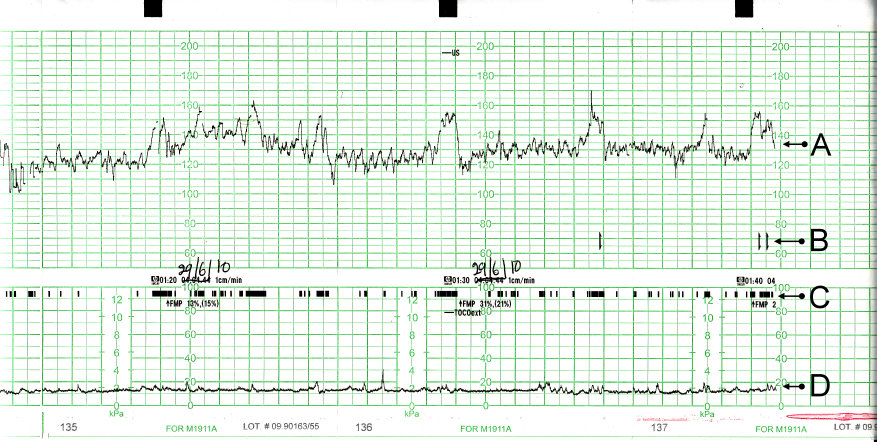

Cardiotocograms (CTGs) are used during labor and late stage pregnancy to monitor fetal and maternal health. CTGs (also called electronic fetal monitoring, EFM) use ultrasound transducers to record fetal heart rate and Braxton Hicks contractions. CTGs can indicate if a fetus is at risk for hypoxia (lack of oxygen). Variables like histogram_mode (etc) are referring to fetal heart rate histograms. An example CTG is pictured below:

Image Source: (Cardiotocography 2023)
On the CTG, (A) shows fetal heartbeat, (B) shows fetal movement felt by the mother, (C) shows recorded fetal movement, and (D) shows uterine contractions.
A fetus at risk for hypoxia is considered “pathological” and in need of immediate attention. Suspect cases may have one characteristic that strays from normal but are not at an immediate risk.
In the fetal health data set used in this analysis, the classification into categories (normal (1), suspect (2), and pathological (3)) was done by “expert obstetricians” interpreting the CTG results (Ayres de Campos et al. 2000).
The motivation behind creating a machine learning algorithm to interpret these CTGs is to:
Aid human interpretation of CTGs, make results more accessible to untrained individuals
Speed up human interpretation
Potentially help reduce biases in the medical system (for instance, discounting an individuals concerns based on race or ethnicity). An algorithm based on the variables in our dataset should not hold these biases.
This document is created with R Markdown and uses R’s ‘reticulate’ package to integrate Python code. Most visualizations and data cleaning is done in R, while the machine learning algorithms are run in Python.
#Number of individuals in each category table(fet_df$fetal_health)
1 2 3
1655 295 176
#percent of observations belonging to each category(table(fet_df$fetal_health))/2126
1 2 3
0.77845720 0.13875823 0.08278457
There are 1655 normal cases (‘1’, 77.8%), 295 suspect cases (‘2’, 13.9%), and 176 pathological cases (‘3’, 8.3%), indicating an unbalanced outcome variable.
Looking at correlations between independent variables and outcome class:
There may be outliers based on some of the variables. I will run models on sets with all observations, but also try running it on data where the mean is imputed for the outliers to see if this makes a difference in model performance.
Creating Dummy Variables from Histogram Tendency Variable
Since analysis will be done in python, I need categorical variables coded as dummy variables.
As I ran the models, I realized all models have a difficult time detecting suspect cases in particular. I combined suspect and pathological classes into a binary variable to see if this might improve performance when it comes to detecting these categories.
#mutating outcome to be binary 1= normal, 2= suspect & pathological. New outcome column is called fetal_health_bin#case_when does not work well with factors, so I converted to characters and then back to factorsfet_df$fetal_health<-as.character(fet_df$fetal_health)#Mutate into new binary outcome column fetal_health_bin (0=normal, 1= flagged cases)fet_df<-fet_df %>%mutate(fetal_health_bin=case_when( fetal_health=="1"~"0", fetal_health =="2"| fetal_health =="3"~"1"))#fix classes of mutated columnsfet_df$fetal_health_bin<-as.factor(fet_df$fetal_health_bin)fet_df$fetal_health<-as.factor(fet_df$fetal_health)
Creating Ordered Factors for 3 Class Outcome:
I also tested an ordered factor outcome category throughout runs, but to save space and time running the code I removed this from the analysis. Ordering the outcome factors generally resulted in the same outcome as for unordered classes.
#trying out ordered factorsfet_df$fetal_health_fac <-factor(fet_df$fetal_health, ordered =TRUE, levels =c("1", "2", "3"))#Checking classes of new columnsclass(fet_df$fetal_health_fac)
[1] "ordered" "factor"
class(fet_df$fetal_health)
[1] "factor"
Splitting the Data
I am setting aside the test (hold-out) set for use after cross-validation/ hyperparameter optimization. The training set has 1488 observations (70% of the data) and the test set has 638 observations (30% of the data).
#create ID columnfet_df$id<-1:nrow(fet_df)set.seed(12)#use 70% of dataset as training set and 30% as test set train <- fet_df %>%sample_frac(0.7) test <-anti_join(fet_df, train, by ='id')#Checking dimensions of split datadim(train)
[1] 1488 28
dim(test)
[1] 638 28
The rest of the data preprocessing (scaling and outlier imputing) will be done within each cross-validation split using sci-kit learn’s pipeline.
Evaluation Metric
A metric that places importance on the detection of categories “suspect” (2) and “pathological” (3) is going to be very important so more caution and attention will be paid to these higher-risk cases. In other words, false negatives are likely to be more harmful than false positives. For instance, we can get very good accuracy score if we are very successful in classifying normal cases but less successful in detecting pathological and suspect cases.
In addition to macro f1 score, I will consider by-class f1 scores to ensure the model is performing sufficiently on suspect and pathological cases.
Fit Models
Python Set-Up
import numpy as np import pandas as pd import sklearn as sklearnfrom sklearn import linear_modelfrom sklearn.preprocessing import StandardScaler
#Opening R objects with reticulate/Pythontrain=r.traintest=r.test#Checking class of outcome variabletrain.dtypes['fetal_health']
#Setting subsets for x and y variablestrain_x=train[['baseline.value','accelerations','fetal_movement','uterine_contractions','light_decelerations','severe_decelerations','prolongued_decelerations','abnormal_short_term_variability','mean_value_of_short_term_variability','percentage_of_time_with_abnormal_long_term_variability','mean_value_of_long_term_variability','histogram_width','histogram_min','histogram_max','histogram_number_of_peaks','histogram_number_of_zeroes','histogram_mode','histogram_mean','histogram_median','histogram_variance','histogram_tendency_negative','histogram_tendency_zero','histogram_tendency_positive']]#Outcome Class for 3 Classestrain_y=train[['fetal_health']]#Outcome Class for Ordered 3 Classestrain_y_fac=train[['fetal_health_fac']]#Outcome Class for Binarytrain_y_bin=train[['fetal_health_bin']]#convert data type from matrix to numpy ndarraytrain_y=train_y.values.ravel()train_y_fac=train_y_fac.values.ravel()train_y_bin=train_y_bin.values.ravel()
Defining a Function to Remove Outliers Based on Z-score
I used ChatGPT to help with this code. I still need to learn more about working with Numpy arrays and Pandas data frames but this eventually helped me figure out a function that could be implemented with Scikit-learn’s pipeline.
#changing class of data frame to work with Function Transformernp.array(train)
from sklearn.base import BaseEstimator, TransformerMixin#This code (from ChatGPT) transforms a function to work within Pipelineclass ElementWiseFunctionTransformer(BaseEstimator, TransformerMixin):def__init__(self, func):self.func = funcdef fit(self, X, y=None):returnselfdef transform(self, X):returnself.func(X)#Defining a function that replaces standardized observations with a z-score greater than the absolute value of 3 with 0 (mean). Observations will be standardized in the previous step in the pipedef replace_greater_than_abs_three(arr):return np.where(np.abs(arr) >3, 0, arr)
#setting parameters to be tested with GridSearchCVparams = [{'log_l__C': [0.01,0.1,1,10,100,500,1000],'log_l__penalty': ['l1', 'l2']} # testing l1 and l2 penalty]#define pipelinelog_pipe = Pipeline(steps=[('scale', StandardScaler()), ('log_l', LogisticRegression(solver='saga', tol=0.006))])#define pipeline that also removes outlierslog_pipe_no_out = Pipeline(steps=[('scale', StandardScaler()), ('elementwise_function', ElementWiseFunctionTransformer(replace_greater_than_abs_three)), ('log_l', LogisticRegression(solver='saga', tol=0.006))])#Apply Grid SearchGS_log = GridSearchCV(log_pipe, param_grid=params, scoring="f1_macro", cv=5) #with outliersGS_log_no_out = GridSearchCV(log_pipe_no_out, param_grid=params, scoring="f1_macro", cv=5) #with outliers imputed
Using the pipeline should apply transformations at each fold to avoid data leakage and get more accurate evaluation metrics.
Defining a Function to Return Macro f1 Scores and By-Class F1 Scores
Below I define a function that takes in the outcome variable (y) and pre-defined GridSearchCV object and outputs macro f1 and by-class f1 scores
def CV_F1_function(GS_object, outcome): random.seed(3) # set seed each time the algorithm is run for reproducibility#print best parameters and macro f1 best_GS=GS_object.fit(train_x, outcome) #finds the best parametersprint(best_GS.best_params_)print(f'Best Macro F1: {best_GS.best_score_}')#Print by-class f1 scores pred1 = cross_val_predict(best_GS.best_estimator_, train_x, outcome, cv=5) #plugs in best parameters f1_class = f1_score(outcome, pred1, average=None) #calculates by-class f1 scoresprint(f1_class)
I use the above function to determine best parameters and optimize macro f1 scores for our data with outliers and with the outliers removed and imputed with the mean (0). This function returns optimized parameters, macro f1 scores, and by-class f1 scores (in the order: normal, suspect, pathological). I use this function throughout the rest of this document.
Plugging logistic regression grid search objects into function:
{'log_l__C': 1000, 'log_l__penalty': 'l1'}
Best Macro F1: 0.8584997817538043
[0.9407282 0.77198697]
CV_F1_function(GS_object=GS_log_no_out, outcome=train_y_bin) #Binary Outcome with x variable outliers removed
{'log_l__C': 10, 'log_l__penalty': 'l1'}
Best Macro F1: 0.8374660860773042
[0.93316413 0.74183007]
Our best macro f1 score for the 3 class unordered outcome (outliers kept) is 0.8194 where the f1 for “normal” is 0.952, 0.7095 for “suspect”, and 0.8 for “pathological”. The optimized parameters are an l1 penalty and C=1 (C is 1/lambda, so a small C indicates a large penalty).
For the binary outcome, out best f1 score is 0.8585 (occurs when outliers are kept) with an f1 for normal of 0.9416 and for the suspect/pathological cases 0.7752. The optimized C is 100, (a smaller penalty than for the 3 class outcome) and once again, the l1 penalty.
Elastic Net Regularization
params = [{'log_net__l1_ratio': [0.2, 0.5, 0.7, 0.8, 0.9, 1], #1 indicates full f1 penalty 'log_net__C': [0.01, 0.1, 1.0, 10, 100]} # tests 20 values of C between 0 and 4 on the log scale}]log_net = LogisticRegression(solver='saga', tol=0.006, penalty='elasticnet')log_net_pipe = Pipeline(steps=[('scale', StandardScaler()), ('log_net', LogisticRegression(solver='saga', tol=0.006, penalty='elasticnet'))])log_net_pipe_no_out = Pipeline(steps=[('scale', StandardScaler()), ('elementwise_function', ElementWiseFunctionTransformer(replace_greater_than_abs_three)), ('log_net', LogisticRegression(solver='saga', tol=0.006, penalty='elasticnet'))])GS_log_net = GridSearchCV(log_net_pipe, param_grid=params, scoring="f1_macro", cv=5)GS_log_net_no_out = GridSearchCV(log_net_pipe_no_out, param_grid=params, scoring="f1_macro", cv=5)
{'log_net__C': 10, 'log_net__l1_ratio': 0.2}
Best Macro F1: 0.8374660860773042
[0.93316413 0.74183007]
Again, our best macro f1 score for the unordered 3 class outcome (outliers kept) is 0.8194. The optimized C is still 1, and the l1 ratio is 0.9, indicating a stronger l1 penalty performs better. This is consistent with the previous runs finding the l1 penalty outperformed the l2 penalty. For the binary outcome, the macro f1 score is 0.8589. This is very close to the results from the previous section. For simplicity’s sake I will only test the optimized parameters with the l1 penalty from the previous section on the final test set.
Boosting
import randomrandom.seed(1)import xgboost as xgbfrom sklearn.model_selection import GridSearchCVfrom sklearn.preprocessing import LabelEncoderfrom sklearn.pipeline import Pipelinefrom sklearn.preprocessing import FunctionTransformer#While it is unnecessary to scale data for boosting, I include it so we can use it to remove outliers in the next pipeline. Scaling the data should not affect model performance.xgb_pipe = Pipeline(steps=[('scale', StandardScaler()), ('xgb', xgb.XGBClassifier(objective='multi:softprob'))]) #multi::softporb is used for multiclass outcome variablesxgb_pipe_no_out = Pipeline(steps=[('scale', StandardScaler()), ('elementwise_function', ElementWiseFunctionTransformer(replace_greater_than_abs_three)), ('xgb', xgb.XGBClassifier(objective='multi:softprob'))]) xgb_pipe_bin = Pipeline(steps=[('scale', StandardScaler()), ('xgb', xgb.XGBClassifier(objective='binary:logistic'))]) #binary:logisitic is used for binary outcome variablesxgb_pipe_no_out_bin = Pipeline(steps=[('scale', StandardScaler()), ('elementwise_function', ElementWiseFunctionTransformer(replace_greater_than_abs_three)), ('xgb', xgb.XGBClassifier(objective='binary:logistic'))]) #setting parameters to grid searchparams = {"xgb__n_estimators": [50, 100, 300, 500, 1000], #while more trees could increase performance slightly for some models, this is too time consuming to run"xgb__learning_rate": [0.01, 0.1, 0.5, 1],"xgb__max_depth": [1,4,6,8] #max depth of a tree... I tried to tune to higher depths however this was very time consuming to run and didn't provide much in return/ could possibly lead to overfitting}#setting parameters to grid search#fixing class outcome labels (0,1,2, work with xgboost as opposed to 1,2,3)le = LabelEncoder()train_yb = le.fit_transform(train_y)train_yb_fac = le.fit_transform(train_y_fac)#fixing class of binary outcome to work with xgboosttrain_yb_bin = le.fit_transform(train_y_bin)#Implementing grid search with cross validationGS_xgb= GridSearchCV(xgb_pipe, param_grid=params, scoring ="f1_macro", cv=5, verbose=0)GS_xgb_no_out= GridSearchCV(xgb_pipe_no_out, param_grid=params, scoring ="f1_macro", cv=5, verbose=0)GS_xgb_bin= GridSearchCV(xgb_pipe_bin, param_grid=params, scoring ="f1_macro", cv=5, verbose=0)GS_xgb_no_out_bin= GridSearchCV(xgb_pipe_no_out_bin, param_grid=params, scoring ="f1_macro", cv=5, verbose=0)
These are the best performing models so far. The model with the binary outcome class (with outliers removed) performs fairly well on the suspect/pathological outcome class (macro f1= 0.935, f1 for “normal”=0.972, and f1 for “suspect/pathological”=0.898).
Again the 3 class model has trouble detecting suspect cases, so in this case, I might prefer the binary outcome model (where suspect and pathological classes combined f1 score is 0.8489.) Boosting still performs better for both the three class and binary outcome variables.
K-Nearest Neighbors (KNN)
Finally I tested K nearest neighbors to see if a high variance model (low bias) may perform better than boosting. This is not the case.
{'knn__n_neighbors': 3}
Best Macro F1: 0.8781885851854287
[0.95130143 0.8047138 ]
Final Model Evaluation
Test set pre-processing
#Test set pre-processing#Setting subsets for x and y variablestest_x=test[['baseline.value','accelerations','fetal_movement','uterine_contractions','light_decelerations','severe_decelerations','prolongued_decelerations','abnormal_short_term_variability','mean_value_of_short_term_variability','percentage_of_time_with_abnormal_long_term_variability','mean_value_of_long_term_variability','histogram_width','histogram_min','histogram_max','histogram_number_of_peaks','histogram_number_of_zeroes','histogram_mode','histogram_mean','histogram_median','histogram_variance','histogram_tendency_negative','histogram_tendency_zero','histogram_tendency_positive']]#Outcome Class for 3 Classestest_y=test[['fetal_health']]#Outcome Class for Binarytest_y_bin=test[['fetal_health_bin']]#convert data type from matrix to numpy npdarraytest_y=test_y.values.ravel()test_y_bin=test_y_bin.values.ravel()#Standardize Test Data Based on column means and standard deviations of training settest_x = (test_x - train_x.mean()) / train_x.std()test_x_no_out=replace_greater_than_abs_three(test_x) #create test df with outliers imputed with the mean (0)#For simplicity, all variables (including dummy variables) have been standardized (the pipeline did this as well). While unnecessary, this should not affect results. #Standardize full training datatrain_x_st = (train_x - train_x.mean()) / train_x.std()train_x_st_no_out=replace_greater_than_abs_three(train_x_st) #create training df with outliers imputed with the mean
Logistic Regression
random.seed(3)#3 Classes, Outliers Kept: l1 penalty with C=1log_final_mod=LogisticRegression(solver='saga', tol=0.006, C=1.0, penalty='l1') #fit model with optimized hyperparameterslog_final_mod.fit(train_x_st, train_y)
In a Jupyter environment, please rerun this cell to show the HTML representation or trust the notebook. On GitHub, the HTML representation is unable to render, please try loading this page with nbviewer.org.
y_pred=log_final_mod.predict(test_x) #make predictions on test setf1_1 = f1_score(test_y, y_pred, average='macro') #calculate macro f1print(f1_1)
0.7603825352102777
f1_by_class = f1_score(test_y, y_pred, average=None) #calculate by-class f1 scoresprint(f1_by_class)#Binary Outcome, Outliers Kept: l1 penalty and C=500
[0.9402229 0.58682635 0.75409836]
log_final_mod_bin=LogisticRegression(solver='saga', tol=0.006, C=500, penalty='l1') #fit model with optimized hyperparameterslog_final_mod.fit(train_x_st, train_y_bin)
In a Jupyter environment, please rerun this cell to show the HTML representation or trust the notebook. On GitHub, the HTML representation is unable to render, please try loading this page with nbviewer.org.
y_pred=log_final_mod.predict(test_x) #make predictions on test setf1_1 = f1_score(test_y_bin, y_pred, average='macro') #calculate macro f1print(f1_1)
0.8712133867914023
f1_by_class = f1_score(test_y_bin, y_pred, average=None) #calculate by-class f1 scoresprint(f1_by_class)
[0.94105691 0.80136986]
Boosting
random.seed(3)#fixing class outcome labels (0,1,2, work with xgboost as opposed to 1,2,3)le = LabelEncoder()test_yb = le.fit_transform(test_y)#fixing class of binary outcome to work with xgboosttest_yb_bin = le.fit_transform(test_y_bin)#3 Class, Outliers Kept: learning_rate= 0.5, max_depth= 8, n_estimators= 50boosting_final_mod= xgb.XGBClassifier(objective='multi:softprob', learning_rate=0.5, max_depth=8, n_estimators=50)boosting_final_mod.fit(train_x_st, train_yb)
In a Jupyter environment, please rerun this cell to show the HTML representation or trust the notebook. On GitHub, the HTML representation is unable to render, please try loading this page with nbviewer.org.
In a Jupyter environment, please rerun this cell to show the HTML representation or trust the notebook. On GitHub, the HTML representation is unable to render, please try loading this page with nbviewer.org.
In a Jupyter environment, please rerun this cell to show the HTML representation or trust the notebook. On GitHub, the HTML representation is unable to render, please try loading this page with nbviewer.org.
SVC(C=10, gamma=0.1)
y_pred=svm_final_mod.predict(test_x) #make predictions on test setf1_1 = f1_score(test_y, y_pred, average='macro') #calculate macro f1print(f1_1)
In a Jupyter environment, please rerun this cell to show the HTML representation or trust the notebook. On GitHub, the HTML representation is unable to render, please try loading this page with nbviewer.org.
SVC(C=10, gamma=0.1)
y_pred=svm_final_mod_bin.predict(test_x) #make predictions on test setf1_1 = f1_score(test_y_bin, y_pred, average='macro') #calculate macro f1print(f1_1)
0.9124360082897572
f1_by_class = f1_score(test_y_bin, y_pred, average=None) #calculate by-class f1 scoresprint(f1_by_class)
In a Jupyter environment, please rerun this cell to show the HTML representation or trust the notebook. On GitHub, the HTML representation is unable to render, please try loading this page with nbviewer.org.
KNeighborsClassifier(n_neighbors=1)
y_pred=knn_final_mod.predict(test_x) #make predictions on test setf1_1 = f1_score(test_y, y_pred, average='macro') #calculate macro f1print(f1_1)
In a Jupyter environment, please rerun this cell to show the HTML representation or trust the notebook. On GitHub, the HTML representation is unable to render, please try loading this page with nbviewer.org.
KNeighborsClassifier(n_neighbors=3)
y_pred=knn_final_mod_bin.predict(test_x_no_out) #make predictions on test setf1_1 = f1_score(test_y_bin, y_pred, average='macro') #calculate macro f1print(f1_1)
0.8512755510876059
f1_by_class = f1_score(test_y_bin, y_pred, average=None) #calculate by-class f1 scoresprint(f1_by_class)
The best performing model for both a three-class outcome and a binary outcome was the model created with XGBoost. These models actually performed slightly better when trained on the full training set and tested on the held-out test set than they did during cross validation. This is likely because the final model was trained on a larger dataset. Boosting slowly learns through a sequential algorithm where trees are fit on residuals from the previous tree. Because we are fitting many trees, this algorithm is less prone to overfitting. While XGBoost reduces bias and can produce very good predictions, this model is less interpretable than other models such as logistic regression.
Logistic regression is the most biased model used in this analysis. Because this model has low flexibility it could not learn as much from the training data as models like boosting, SVM and KNN can. However, this is likely the most interpretable model from this analysis. While interpretable, the logistic regression model does not perform well enough to be used, especially given performance on the “suspect” and “pathological” cases.
After boosting, the best performing model was support vector machines (SVM). SVM does a better job classifying “suspect” and “pathological” cases than KNN and logisitic regression, especially on a binary outcome variable. One advantage of SVM is we can impose a softer margin by increasing C (increasing bias), which likely helped SVM learn the nuances of classification of these categories without increasing the variance. SVM also allows us to model highly non-linear relationships (this is likely the case for out data given logistic regression did not perform well). In our case, the optimal kernel was a radial kernel which can perform well in a dataset of higher dimensions.
Finally I tested K-Nearest Neighbors to see if a low bias, high variance model could perform well given our data did not seem to follow a linear relationship. This was not the case, KNN performed similarly to logistic regression, suggesting a model that has a balance between bias and variance would work better with our data. KNN is also not very interpretable. KNN had the lowest score of all the models on the test set for the binary outcome class (and also a low score for the three class outcome) thus, it was likely overfitting to the training data (especially given the optimized k for the 3 class outcome was 1).
Ethical Implications
While I was hoping to land on an interpretable model so one could easily interpret what may be flagging a case as “suspect” or “pathological”, in the case of CTGs, a better performing model is more important than an interpretable model.
While boosted models are not very interpretable, the performance is the best for both a 3-class outcome variable and a binary outcome variable.
In an outpatient setting, where there is more time to take a closer look at the CTGs, I might suggest using the boosted model with a binary outcome (macro f1= 0.947, f1 for class “normal”= 0.975, f1 for class “suspect/pathological”= 0.919”). This is because the “suspect” case is still difficult to detect in the three-class outcome, so the better f1 score for the combined outcome might be better for flagging suspect cases in addition to pathological cases. In an outpatient setting, the medical professional can then look closer at the flagged cases, interpret why they are being flagged and then class them as “suspect” or “pathological”. For a labor setting, time is more critical, and immediate flagging of pathological cases is more critical. In a labor setting, I would suggest using the boosted 3-class outcome since it performs better on the pathological cases (and suspect cases are not necessarily in need of immediate attention) (macro f1=0.924, f1 for “normal”= 0.973, f1 for “suspect”= 0.845, and f1 for “pathological”= 0.954).
Because in general, f1 scores for suspect and pathological classes are much lower than for normal, I am not sure I would ever feel comfortable with this model being deployed without a human medical professional also analyzing the CTG and making a decision for themselves. Finally, before being deployed, such a model should be trained on a much larger data set than was done in this analysis (to avoid overfitting).
While my original aim was to come up with a high-performing interpretable model, given the low f1 score for suspect/pathological classes, I would consider training a neural network/deep learning model in the future if such a model is able to achieve better performance. However, even if a much higher performing, neural network or other machine learning model is developed, it should not be deployed without people trained to read CTGs analyzing the document for themselves given the low interpretablilty of such an algorithm.
---title: "Machine Learning Final Project"author: "Emma Rasmussen"description: "Machine Learning to Interpret Cardiotocograms (CTGs)"date: "05/22/2022"image: "CTG_Output.jpeg"format: html: toc: true code-copy: true code-tools: true---```{r}#| label: setup#| warning: false#| message: falseknitr::opts_chunk$set(echo =TRUE, warning=FALSE, message=FALSE)library(tidyverse)library(ggplot2)library(dplyr)library(stringr)library(VIM)library(lubridate)library(glmnet)library(MASS)library(e1071)library(class)library(nnet)library(boot)library(caret)library(MLmetrics)library(gridExtra)library(reticulate)library(fastDummies)virtualenv_create("MLFinal") #create virtual environment... per reticulate cheat sheetpy_install("pandas", env_name="MLFinal")py_install("numpy", env_name="MLFinal")py_install("xgboost", env_name="MLFinal")conda_install("MLFinal", "scikit-learn")use_virtualenv("MLFinal")knitr::knit_engines$set(python =reticulate::eng_python) ```# MotivationCardiotocograms (CTGs) are used during labor and late stage pregnancy to monitor fetal and maternal health. CTGs (also called electronic fetal monitoring, EFM) use ultrasound transducers to record fetal heart rate and Braxton Hicks contractions. CTGs can indicate if a fetus is at risk for hypoxia (lack of oxygen). Variables like histogram_mode (etc) are referring to fetal heart rate histograms. An example CTG is pictured below:```{r, echo=FALSE}knitr::include_graphics("CTG_Output.jpeg") ```Image Source: (Cardiotocography 2023)On the CTG, (A) shows fetal heartbeat, (B) shows fetal movement felt by the mother, (C) shows recorded fetal movement, and (D) shows uterine contractions.A fetus at risk for hypoxia is considered "pathological" and in need of immediate attention. Suspect cases may have one characteristic that strays from normal but are not at an immediate risk.In the fetal health data set used in this analysis, the classification into categories (normal (1), suspect (2), and pathological (3)) was done by "expert obstetricians" interpreting the CTG results (Ayres de Campos et al. 2000).The motivation behind creating a machine learning algorithm to interpret these CTGs is to:- Aid human interpretation of CTGs, make results more accessible to untrained individuals- Speed up human interpretation- Potentially help reduce biases in the medical system (for instance, discounting an individuals concerns based on race or ethnicity). An algorithm based on the variables in our dataset should not hold these biases.This document is created with R Markdown and uses R's 'reticulate' package to integrate Python code. Most visualizations and data cleaning is done in R, while the machine learning algorithms are run in Python.# Exploratory Data Analysis and Data PreprocessingRead in the Data:```{r}fet_df<-read.csv("fetal_health.csv")fet_df$fetal_health<-as.factor(fet_df$fetal_health)```Look at size of data frame and summary statistics:```{r}dim(fet_df)summary(fet_df)```The data has 2126 observations and 22 variables.Check for missing values:```{r}colSums(is.na(fet_df))```There are no missing values in the dataframe so I will not be doing data imputation for NAs.Look at dependent variable:```{r}ggplot(data=fet_df, aes(x= fetal_health))+geom_bar(stat="count")``````{r}#Number of individuals in each category table(fet_df$fetal_health)#percent of observations belonging to each category(table(fet_df$fetal_health))/2126```There are 1655 normal cases ('1', 77.8%), 295 suspect cases ('2', 13.9%), and 176 pathological cases ('3', 8.3%), indicating an unbalanced outcome variable.Looking at correlations between independent variables and outcome class:```{r}g1<-ggplot(data=fet_df, aes(x= baseline.value))+geom_bar(stat="count", aes(fill=fetal_health))g2<-ggplot(data=fet_df, aes(x= accelerations))+geom_bar(stat="count", aes(fill=fetal_health))g3<-ggplot(data=fet_df, aes(x= fetal_movement))+geom_bar(stat="count", aes(fill=fetal_health))g4<-ggplot(data=fet_df, aes(x= uterine_contractions))+geom_bar(stat="count", aes(fill=fetal_health))g5<-ggplot(data=fet_df, aes(x= light_decelerations))+geom_bar(stat="count", aes(fill=fetal_health))g6<-ggplot(data=fet_df, aes(x= severe_decelerations))+geom_bar(stat="count", aes(fill=fetal_health))g7<-ggplot(data=fet_df, aes(x= prolongued_decelerations))+geom_bar(stat="count", aes(fill=fetal_health))g8<-ggplot(data=fet_df, aes(x= abnormal_short_term_variability))+geom_bar(stat="count", aes(fill=fetal_health))g9<-ggplot(data=fet_df, aes(x= mean_value_of_short_term_variability))+geom_bar(stat="count", aes(fill=fetal_health))g10<-ggplot(data=fet_df, aes(x= percentage_of_time_with_abnormal_long_term_variability))+geom_bar(stat="count", aes(fill=fetal_health))g11<-ggplot(data=fet_df, aes(x= histogram_width))+geom_bar(stat="count", aes(fill=fetal_health))g12<-ggplot(data=fet_df, aes(x= mean_value_of_long_term_variability))+geom_bar(stat="count", aes(fill=fetal_health))g13<-ggplot(data=fet_df, aes(x= histogram_min))+geom_bar(stat="count", aes(fill=fetal_health))g14<-ggplot(data=fet_df, aes(x= histogram_max))+geom_bar(stat="count", aes(fill=fetal_health))g15<-ggplot(data=fet_df, aes(x= histogram_number_of_peaks))+geom_bar(stat="count", aes(fill=fetal_health))g16<-ggplot(data=fet_df, aes(x= histogram_number_of_zeroes))+geom_bar(stat="count", aes(fill=fetal_health))g17<-ggplot(data=fet_df, aes(x= histogram_mode))+geom_bar(stat="count", aes(fill=fetal_health))g18<-ggplot(data=fet_df, aes(x= histogram_mean))+geom_bar(stat="count", aes(fill=fetal_health))g19<-ggplot(data=fet_df, aes(x= histogram_median))+geom_bar(stat="count", aes(fill=fetal_health))g20<-ggplot(data=fet_df, aes(x= histogram_variance))+geom_bar(stat="count", aes(fill=fetal_health))g21<-ggplot(data=fet_df, aes(x= histogram_tendency))+geom_bar(stat="count", aes(fill=fetal_health))grid.arrange(g1, g2, g3, g4, g5, g6, g7, g8, g9, g10, g11)grid.arrange(g12, g13, g14, g15, g16, g17, g18, g19, g20, g21)```Looking for outliers in independent variables:```{r}g1<-ggplot(data=fet_df, aes(x=fetal_health, y=baseline.value))+geom_boxplot()g2<-ggplot(data=fet_df, aes(x=fetal_health, y=accelerations))+geom_boxplot()g3<-ggplot(data=fet_df, aes(x=fetal_health, y=fetal_movement))+geom_boxplot()g4<-ggplot(data=fet_df, aes(x=fetal_health, y=uterine_contractions))+geom_boxplot()g5<-ggplot(data=fet_df, aes(x=fetal_health, y=light_decelerations))+geom_boxplot()g6<-ggplot(data=fet_df, aes(x=fetal_health, y=severe_decelerations))+geom_boxplot()g7<-ggplot(data=fet_df, aes(x=fetal_health, y=prolongued_decelerations))+geom_boxplot()g8<-ggplot(data=fet_df, aes(x=fetal_health, y=abnormal_short_term_variability))+geom_boxplot()g9<-ggplot(data=fet_df, aes(x=fetal_health, y=mean_value_of_short_term_variability))+geom_boxplot()g10<-ggplot(data=fet_df, aes(x=fetal_health, y=percentage_of_time_with_abnormal_long_term_variability))+geom_boxplot()g11<-ggplot(data=fet_df, aes(x=fetal_health, y=histogram_width))+geom_boxplot()g12<-ggplot(data=fet_df, aes(x=fetal_health, y=mean_value_of_long_term_variability))+geom_boxplot()g13<-ggplot(data=fet_df, aes(x=fetal_health, y=histogram_min))+geom_boxplot()g14<-ggplot(data=fet_df, aes(x=fetal_health, y=histogram_max))+geom_boxplot()g15<-ggplot(data=fet_df, aes(x=fetal_health, y=histogram_number_of_peaks))+geom_boxplot()g16<-ggplot(data=fet_df, aes(x=fetal_health, y=histogram_number_of_zeroes))+geom_boxplot()g17<-ggplot(data=fet_df, aes(x=fetal_health, y=histogram_mode))+geom_boxplot()g18<-ggplot(data=fet_df, aes(x=fetal_health, y=histogram_mean))+geom_boxplot()g19<-ggplot(data=fet_df, aes(x=fetal_health, y=histogram_median))+geom_boxplot()g20<-ggplot(data=fet_df, aes(x=fetal_health, y=histogram_variance))+geom_boxplot()g21<-ggplot(data=fet_df, aes(x=fetal_health, y=histogram_tendency))+geom_boxplot()grid.arrange(g1, g2, g3, g4, g5, g6, g7)grid.arrange(g8, g9, g10, g11, g12, g13, g14)grid.arrange(g15, g16, g17, g18, g19, g20, g21)```There may be outliers based on some of the variables. I will run models on sets with all observations, but also try running it on data where the mean is imputed for the outliers to see if this makes a difference in model performance.## Creating Dummy Variables from Histogram Tendency VariableSince analysis will be done in python, I need categorical variables coded as dummy variables.```{r}fet_df<-mutate(fet_df, histogram_tendency=(case_when( histogram_tendency ==-1~"negative", histogram_tendency ==0~"zero", histogram_tendency ==1~"positive")))#using fastDummies packagefet_df<-dummy_cols(fet_df, select_columns ='histogram_tendency')head(dplyr::select(fet_df, 'histogram_tendency_negative', 'histogram_tendency_positive', 'histogram_tendency_zero'), 5)```## Creating a Binary Outcome VariablesAs I ran the models, I realized all models have a difficult time detecting suspect cases in particular. I combined suspect and pathological classes into a binary variable to see if this might improve performance when it comes to detecting these categories.```{r}#mutating outcome to be binary 1= normal, 2= suspect & pathological. New outcome column is called fetal_health_bin#case_when does not work well with factors, so I converted to characters and then back to factorsfet_df$fetal_health<-as.character(fet_df$fetal_health)#Mutate into new binary outcome column fetal_health_bin (0=normal, 1= flagged cases)fet_df<-fet_df %>%mutate(fetal_health_bin=case_when( fetal_health=="1"~"0", fetal_health =="2"| fetal_health =="3"~"1"))#fix classes of mutated columnsfet_df$fetal_health_bin<-as.factor(fet_df$fetal_health_bin)fet_df$fetal_health<-as.factor(fet_df$fetal_health)```## Creating Ordered Factors for 3 Class Outcome:I also tested an ordered factor outcome category throughout runs, but to save space and time running the code I removed this from the analysis. Ordering the outcome factors generally resulted in the same outcome as for unordered classes.```{r}#trying out ordered factorsfet_df$fetal_health_fac <-factor(fet_df$fetal_health, ordered =TRUE, levels =c("1", "2", "3"))#Checking classes of new columnsclass(fet_df$fetal_health_fac)class(fet_df$fetal_health)```## Splitting the DataI am setting aside the test (hold-out) set for use after cross-validation/ hyperparameter optimization. The training set has 1488 observations (70% of the data) and the test set has 638 observations (30% of the data).```{r}#create ID columnfet_df$id<-1:nrow(fet_df)set.seed(12)#use 70% of dataset as training set and 30% as test set train <- fet_df %>%sample_frac(0.7) test <-anti_join(fet_df, train, by ='id')#Checking dimensions of split datadim(train)dim(test)```The rest of the data preprocessing (scaling and outlier imputing) will be done within each cross-validation split using sci-kit learn's pipeline.# Evaluation MetricA metric that places importance on the detection of categories "suspect" (2) and "pathological" (3) is going to be very important so more caution and attention will be paid to these higher-risk cases. In other words, false negatives are likely to be more harmful than false positives. For instance, we can get very good accuracy score if we are very successful in classifying normal cases but less successful in detecting pathological and suspect cases.In addition to macro f1 score, I will consider by-class f1 scores to ensure the model is performing sufficiently on suspect and pathological cases.# Fit Models### Python Set-Up```{python}import numpy as np import pandas as pd import sklearn as sklearnfrom sklearn import linear_modelfrom sklearn.preprocessing import StandardScaler``````{python}#Opening R objects with reticulate/Pythontrain=r.traintest=r.test#Checking class of outcome variabletrain.dtypes['fetal_health']train.dtypes['fetal_health_fac']train.dtypes['fetal_health_bin']``````{python}#Setting subsets for x and y variablestrain_x=train[['baseline.value','accelerations','fetal_movement','uterine_contractions','light_decelerations','severe_decelerations','prolongued_decelerations','abnormal_short_term_variability','mean_value_of_short_term_variability','percentage_of_time_with_abnormal_long_term_variability','mean_value_of_long_term_variability','histogram_width','histogram_min','histogram_max','histogram_number_of_peaks','histogram_number_of_zeroes','histogram_mode','histogram_mean','histogram_median','histogram_variance','histogram_tendency_negative','histogram_tendency_zero','histogram_tendency_positive']]#Outcome Class for 3 Classestrain_y=train[['fetal_health']]#Outcome Class for Ordered 3 Classestrain_y_fac=train[['fetal_health_fac']]#Outcome Class for Binarytrain_y_bin=train[['fetal_health_bin']]#convert data type from matrix to numpy ndarraytrain_y=train_y.values.ravel()train_y_fac=train_y_fac.values.ravel()train_y_bin=train_y_bin.values.ravel()```### Defining a Function to Remove Outliers Based on Z-scoreI used ChatGPT to help with this code. I still need to learn more about working with Numpy arrays and Pandas data frames but this eventually helped me figure out a function that could be implemented with Scikit-learn's pipeline.```{python}#changing class of data frame to work with Function Transformernp.array(train) from sklearn.base import BaseEstimator, TransformerMixin#This code (from ChatGPT) transforms a function to work within Pipelineclass ElementWiseFunctionTransformer(BaseEstimator, TransformerMixin):def__init__(self, func):self.func = funcdef fit(self, X, y=None):returnselfdef transform(self, X):returnself.func(X)#Defining a function that replaces standardized observations with a z-score greater than the absolute value of 3 with 0 (mean). Observations will be standardized in the previous step in the pipedef replace_greater_than_abs_three(arr):return np.where(np.abs(arr) >3, 0, arr)```## Penalized Logistic Regression```{python}#import python modulesfrom sklearn.linear_model import LogisticRegressionfrom sklearn.model_selection import cross_val_predictfrom sklearn.metrics import f1_scorefrom sklearn.model_selection import GridSearchCVfrom sklearn.pipeline import Pipelineimport random```### Testing l1 and l2 Penalty```{python}#setting parameters to be tested with GridSearchCVparams = [{'log_l__C': [0.01,0.1,1,10,100,500,1000],'log_l__penalty': ['l1', 'l2']} # testing l1 and l2 penalty]#define pipelinelog_pipe = Pipeline(steps=[('scale', StandardScaler()), ('log_l', LogisticRegression(solver='saga', tol=0.006))])#define pipeline that also removes outlierslog_pipe_no_out = Pipeline(steps=[('scale', StandardScaler()), ('elementwise_function', ElementWiseFunctionTransformer(replace_greater_than_abs_three)), ('log_l', LogisticRegression(solver='saga', tol=0.006))])#Apply Grid SearchGS_log = GridSearchCV(log_pipe, param_grid=params, scoring="f1_macro", cv=5) #with outliersGS_log_no_out = GridSearchCV(log_pipe_no_out, param_grid=params, scoring="f1_macro", cv=5) #with outliers imputed```Using the pipeline should apply transformations at each fold to avoid data leakage and get more accurate evaluation metrics.### Defining a Function to Return Macro f1 Scores and By-Class F1 ScoresBelow I define a function that takes in the outcome variable (y) and pre-defined GridSearchCV object and outputs macro f1 and by-class f1 scores```{python}def CV_F1_function(GS_object, outcome): random.seed(3) # set seed each time the algorithm is run for reproducibility#print best parameters and macro f1 best_GS=GS_object.fit(train_x, outcome) #finds the best parametersprint(best_GS.best_params_)print(f'Best Macro F1: {best_GS.best_score_}')#Print by-class f1 scores pred1 = cross_val_predict(best_GS.best_estimator_, train_x, outcome, cv=5) #plugs in best parameters f1_class = f1_score(outcome, pred1, average=None) #calculates by-class f1 scoresprint(f1_class)```I use the above function to determine best parameters and optimize macro f1 scores for our data with outliers and with the outliers removed and imputed with the mean (0). This function returns optimized parameters, macro f1 scores, and by-class f1 scores (in the order: normal, suspect, pathological). I use this function throughout the rest of this document.Plugging logistic regression grid search objects into function:```{python}CV_F1_function(GS_object=GS_log, outcome=train_y) #3 ClassesCV_F1_function(GS_object=GS_log_no_out, outcome=train_y) #3 Classes with x variable outliers removedCV_F1_function(GS_object=GS_log, outcome=train_y_bin) #Binary OutcomeCV_F1_function(GS_object=GS_log_no_out, outcome=train_y_bin) #Binary Outcome with x variable outliers removed```Our best macro f1 score for the 3 class unordered outcome (outliers kept) is 0.8194 where the f1 for "normal" is 0.952, 0.7095 for "suspect", and 0.8 for "pathological". The optimized parameters are an l1 penalty and C=1 (C is 1/lambda, so a small C indicates a large penalty).For the binary outcome, out best f1 score is 0.8585 (occurs when outliers are kept) with an f1 for normal of 0.9416 and for the suspect/pathological cases 0.7752. The optimized C is 100, (a smaller penalty than for the 3 class outcome) and once again, the l1 penalty.## Elastic Net Regularization```{python}params = [{'log_net__l1_ratio': [0.2, 0.5, 0.7, 0.8, 0.9, 1], #1 indicates full f1 penalty 'log_net__C': [0.01, 0.1, 1.0, 10, 100]} # tests 20 values of C between 0 and 4 on the log scale}]log_net = LogisticRegression(solver='saga', tol=0.006, penalty='elasticnet')log_net_pipe = Pipeline(steps=[('scale', StandardScaler()), ('log_net', LogisticRegression(solver='saga', tol=0.006, penalty='elasticnet'))])log_net_pipe_no_out = Pipeline(steps=[('scale', StandardScaler()), ('elementwise_function', ElementWiseFunctionTransformer(replace_greater_than_abs_three)), ('log_net', LogisticRegression(solver='saga', tol=0.006, penalty='elasticnet'))])GS_log_net = GridSearchCV(log_net_pipe, param_grid=params, scoring="f1_macro", cv=5)GS_log_net_no_out = GridSearchCV(log_net_pipe_no_out, param_grid=params, scoring="f1_macro", cv=5)``````{python}CV_F1_function(GS_object=GS_log_net, outcome=train_y) #3 ClassesCV_F1_function(GS_object=GS_log_net_no_out, outcome=train_y) #Outliers removedCV_F1_function(GS_object=GS_log_net, outcome=train_y_bin) #Binary OutcomeCV_F1_function(GS_object=GS_log_net_no_out, outcome=train_y_bin)#Outliers Removed```Again, our best macro f1 score for the unordered 3 class outcome (outliers kept) is 0.8194. The optimized C is still 1, and the l1 ratio is 0.9, indicating a stronger l1 penalty performs better. This is consistent with the previous runs finding the l1 penalty outperformed the l2 penalty. For the binary outcome, the macro f1 score is 0.8589. This is very close to the results from the previous section. For simplicity's sake I will only test the optimized parameters with the l1 penalty from the previous section on the final test set.## Boosting```{python}import randomrandom.seed(1)import xgboost as xgbfrom sklearn.model_selection import GridSearchCVfrom sklearn.preprocessing import LabelEncoderfrom sklearn.pipeline import Pipelinefrom sklearn.preprocessing import FunctionTransformer#While it is unnecessary to scale data for boosting, I include it so we can use it to remove outliers in the next pipeline. Scaling the data should not affect model performance.xgb_pipe = Pipeline(steps=[('scale', StandardScaler()), ('xgb', xgb.XGBClassifier(objective='multi:softprob'))]) #multi::softporb is used for multiclass outcome variablesxgb_pipe_no_out = Pipeline(steps=[('scale', StandardScaler()), ('elementwise_function', ElementWiseFunctionTransformer(replace_greater_than_abs_three)), ('xgb', xgb.XGBClassifier(objective='multi:softprob'))]) xgb_pipe_bin = Pipeline(steps=[('scale', StandardScaler()), ('xgb', xgb.XGBClassifier(objective='binary:logistic'))]) #binary:logisitic is used for binary outcome variablesxgb_pipe_no_out_bin = Pipeline(steps=[('scale', StandardScaler()), ('elementwise_function', ElementWiseFunctionTransformer(replace_greater_than_abs_three)), ('xgb', xgb.XGBClassifier(objective='binary:logistic'))]) #setting parameters to grid searchparams = {"xgb__n_estimators": [50, 100, 300, 500, 1000], #while more trees could increase performance slightly for some models, this is too time consuming to run"xgb__learning_rate": [0.01, 0.1, 0.5, 1],"xgb__max_depth": [1,4,6,8] #max depth of a tree... I tried to tune to higher depths however this was very time consuming to run and didn't provide much in return/ could possibly lead to overfitting}#setting parameters to grid search#fixing class outcome labels (0,1,2, work with xgboost as opposed to 1,2,3)le = LabelEncoder()train_yb = le.fit_transform(train_y)train_yb_fac = le.fit_transform(train_y_fac)#fixing class of binary outcome to work with xgboosttrain_yb_bin = le.fit_transform(train_y_bin)#Implementing grid search with cross validationGS_xgb= GridSearchCV(xgb_pipe, param_grid=params, scoring ="f1_macro", cv=5, verbose=0)GS_xgb_no_out= GridSearchCV(xgb_pipe_no_out, param_grid=params, scoring ="f1_macro", cv=5, verbose=0)GS_xgb_bin= GridSearchCV(xgb_pipe_bin, param_grid=params, scoring ="f1_macro", cv=5, verbose=0)GS_xgb_no_out_bin= GridSearchCV(xgb_pipe_no_out_bin, param_grid=params, scoring ="f1_macro", cv=5, verbose=0)``````{python}CV_F1_function(GS_object=GS_xgb, outcome=train_yb) #3 ClassesCV_F1_function(GS_object=GS_xgb_no_out, outcome=train_yb) #Outliers RemovedCV_F1_function(GS_object=GS_xgb_bin, outcome=train_yb_bin) #Binary OutcomeCV_F1_function(GS_object=GS_xgb_no_out_bin, outcome=train_yb_bin) #Outliers Removed```These are the best performing models so far. The model with the binary outcome class (with outliers removed) performs fairly well on the suspect/pathological outcome class (macro f1= 0.935, f1 for "normal"=0.972, and f1 for "suspect/pathological"=0.898).## Support Vector Machines (SVM)```{python}from sklearn import svmparams= {'svm__C': [1, 10, 100, 200], #misclassification error term'svm__gamma': [1, 0.1, 0.01, 0.001], #distance of points to decision boundary being considered'svm__kernel': ['rbf', 'poly', 'sigmoid', 'linear']}svm_cl_pipe = Pipeline([('scale', StandardScaler()), ('svm', svm.SVC())])svm_cl_pipe_no_out = Pipeline([('scale', StandardScaler()), ('elementwise_function', ElementWiseFunctionTransformer(replace_greater_than_abs_three)), ('svm', svm.SVC())])GS_svm= GridSearchCV(svm_cl_pipe, param_grid=params, scoring ="f1_macro", cv=5)GS_svm_no_out= GridSearchCV(svm_cl_pipe_no_out, param_grid=params, scoring ="f1_macro", cv=5)``````{python}CV_F1_function(GS_object=GS_svm, outcome=train_y) #Unordered 3 ClassesCV_F1_function(GS_object=GS_svm_no_out, outcome=train_y) #Outliers RemovedCV_F1_function(GS_object=GS_svm, outcome=train_y_bin) #Binary OutcomeCV_F1_function(GS_object=GS_svm_no_out, outcome=train_y_bin) #Outliers Removed```Again the 3 class model has trouble detecting suspect cases, so in this case, I might prefer the binary outcome model (where suspect and pathological classes combined f1 score is 0.8489.) Boosting still performs better for both the three class and binary outcome variables.## K-Nearest Neighbors (KNN)Finally I tested K nearest neighbors to see if a high variance model (low bias) may perform better than boosting. This is not the case.```{python}from sklearn.neighbors import KNeighborsClassifierparams = {'knn__n_neighbors': [1, 2, 3, 5, 10]}knn_pipe = Pipeline([('scale', StandardScaler()), ('knn', KNeighborsClassifier())])knn_pipe_no_out = Pipeline([('scale', StandardScaler()), ('elementwise_function', ElementWiseFunctionTransformer(replace_greater_than_abs_three)), ('knn', KNeighborsClassifier())])GS_knn= GridSearchCV(knn_pipe, param_grid=params, scoring ="f1_macro", cv=5)GS_knn_no_out= GridSearchCV(knn_pipe_no_out, param_grid=params, scoring ="f1_macro", cv=5)``````{python}CV_F1_function(GS_object=GS_knn, outcome=train_y) #3 ClassesCV_F1_function(GS_object=GS_knn_no_out, outcome=train_y) #Outliers RemovedCV_F1_function(GS_object=GS_knn, outcome=train_y_bin) #Binary OutcomeCV_F1_function(GS_object=GS_knn_no_out, outcome=train_y_bin) #Outliers Removed```## Final Model Evaluation### Test set pre-processing```{python}#Test set pre-processing#Setting subsets for x and y variablestest_x=test[['baseline.value','accelerations','fetal_movement','uterine_contractions','light_decelerations','severe_decelerations','prolongued_decelerations','abnormal_short_term_variability','mean_value_of_short_term_variability','percentage_of_time_with_abnormal_long_term_variability','mean_value_of_long_term_variability','histogram_width','histogram_min','histogram_max','histogram_number_of_peaks','histogram_number_of_zeroes','histogram_mode','histogram_mean','histogram_median','histogram_variance','histogram_tendency_negative','histogram_tendency_zero','histogram_tendency_positive']]#Outcome Class for 3 Classestest_y=test[['fetal_health']]#Outcome Class for Binarytest_y_bin=test[['fetal_health_bin']]#convert data type from matrix to numpy npdarraytest_y=test_y.values.ravel()test_y_bin=test_y_bin.values.ravel()#Standardize Test Data Based on column means and standard deviations of training settest_x = (test_x - train_x.mean()) / train_x.std()test_x_no_out=replace_greater_than_abs_three(test_x) #create test df with outliers imputed with the mean (0)#For simplicity, all variables (including dummy variables) have been standardized (the pipeline did this as well). While unnecessary, this should not affect results. #Standardize full training datatrain_x_st = (train_x - train_x.mean()) / train_x.std()train_x_st_no_out=replace_greater_than_abs_three(train_x_st) #create training df with outliers imputed with the mean```### Logistic Regression```{python}random.seed(3)#3 Classes, Outliers Kept: l1 penalty with C=1log_final_mod=LogisticRegression(solver='saga', tol=0.006, C=1.0, penalty='l1') #fit model with optimized hyperparameterslog_final_mod.fit(train_x_st, train_y)y_pred=log_final_mod.predict(test_x) #make predictions on test setf1_1 = f1_score(test_y, y_pred, average='macro') #calculate macro f1print(f1_1)f1_by_class = f1_score(test_y, y_pred, average=None) #calculate by-class f1 scoresprint(f1_by_class)#Binary Outcome, Outliers Kept: l1 penalty and C=500log_final_mod_bin=LogisticRegression(solver='saga', tol=0.006, C=500, penalty='l1') #fit model with optimized hyperparameterslog_final_mod.fit(train_x_st, train_y_bin)y_pred=log_final_mod.predict(test_x) #make predictions on test setf1_1 = f1_score(test_y_bin, y_pred, average='macro') #calculate macro f1print(f1_1)f1_by_class = f1_score(test_y_bin, y_pred, average=None) #calculate by-class f1 scoresprint(f1_by_class)```### Boosting```{python}random.seed(3)#fixing class outcome labels (0,1,2, work with xgboost as opposed to 1,2,3)le = LabelEncoder()test_yb = le.fit_transform(test_y)#fixing class of binary outcome to work with xgboosttest_yb_bin = le.fit_transform(test_y_bin)#3 Class, Outliers Kept: learning_rate= 0.5, max_depth= 8, n_estimators= 50boosting_final_mod= xgb.XGBClassifier(objective='multi:softprob', learning_rate=0.5, max_depth=8, n_estimators=50)boosting_final_mod.fit(train_x_st, train_yb)y_pred=boosting_final_mod.predict(test_x) #make predictions on test setf1_1 = f1_score(test_yb, y_pred, average='macro') #calculate macro f1print(f1_1)f1_by_class = f1_score(test_yb, y_pred, average=None) #calculate by-class f1 scoresprint(f1_by_class)#Binary Outcome, Outliers Imputed: learning_rate=0.1, max_depth= 6, n_estimators= 1000boosting_final_mod_bin= xgb.XGBClassifier(objective='binary:logistic', learning_rate=0.1, max_depth=6, n_estimators=1000)boosting_final_mod_bin.fit(train_x_st_no_out, train_yb_bin)y_pred=boosting_final_mod_bin.predict(test_x_no_out) #make predictions on test setf1_1 = f1_score(test_yb_bin, y_pred, average='macro') #calculate macro f1print(f1_1)f1_by_class = f1_score(test_yb_bin, y_pred, average=None) #calculate by-class f1 scoresprint(f1_by_class)```### Support Vector Machines```{python}random.seed(3)#3 Class Outcome, Outliers Kept: C=10, gamma= 0.1, kernel= 'rbf'svm_final_mod=svm.SVC(C=10, gamma=0.1, kernel='rbf')svm_final_mod.fit(train_x_st, train_y)y_pred=svm_final_mod.predict(test_x) #make predictions on test setf1_1 = f1_score(test_y, y_pred, average='macro') #calculate macro f1print(f1_1)f1_by_class = f1_score(test_y, y_pred, average=None) #calculate by-class f1 scoresprint(f1_by_class)#Binary Outcome Outliers Kept: C=10, gamma= 0.1, kernel= 'rbf'svm_final_mod_bin=svm.SVC(C=10, gamma=0.1, kernel='rbf')svm_final_mod_bin.fit(train_x_st, train_y_bin)y_pred=svm_final_mod_bin.predict(test_x) #make predictions on test setf1_1 = f1_score(test_y_bin, y_pred, average='macro') #calculate macro f1print(f1_1)f1_by_class = f1_score(test_y_bin, y_pred, average=None) #calculate by-class f1 scoresprint(f1_by_class)```### K-Nearest Neighbors```{python}random.seed(3)#3 Class, Outliers Kept: n-neighbors= 1knn_final_mod=KNeighborsClassifier(n_neighbors=1)knn_final_mod.fit(train_x_st, train_y)y_pred=knn_final_mod.predict(test_x) #make predictions on test setf1_1 = f1_score(test_y, y_pred, average='macro') #calculate macro f1print(f1_1)f1_by_class = f1_score(test_y, y_pred, average=None) #calculate by-class f1 scoresprint(f1_by_class)#Binary Outcome, Outliers Imputed: n-neighbors=3knn_final_mod_bin=KNeighborsClassifier(n_neighbors=3)knn_final_mod_bin.fit(train_x_st_no_out, train_y_bin)y_pred=knn_final_mod_bin.predict(test_x_no_out) #make predictions on test setf1_1 = f1_score(test_y_bin, y_pred, average='macro') #calculate macro f1print(f1_1)f1_by_class = f1_score(test_y_bin, y_pred, average=None) #calculate by-class f1 scoresprint(f1_by_class)```# Compare Models**Three-Class F1 Scores (Macro, By-Class):**Logistic Regression: 0.760 [0.9402229, 0.58682635, 0.75409836]Boosting: 0.924 [0.97341513, 0.8452381, 0.95384615]SVM: 0.841 [0.95634518, 0.78212291, 0.78571429]KNN: 0.792 [0.94512195, 0.65895954, 0.77310924]**Binary Outcome F1 Scores (Macro, By-Class):**Logistic Regression: 0.869 [0.94010152 0.79725086]Boosting: 0.947 [0.97546012, 0.91946309]SVM: 0.912 [0.9591002, 0.86577181]KNN: 0.851 [0.93612774 0.76642336]The best performing model for both a three-class outcome and a binary outcome was the model created with XGBoost. These models actually performed slightly better when trained on the full training set and tested on the held-out test set than they did during cross validation. This is likely because the final model was trained on a larger dataset. Boosting slowly learns through a sequential algorithm where trees are fit on residuals from the previous tree. Because we are fitting many trees, this algorithm is less prone to overfitting. While XGBoost reduces bias and can produce very good predictions, this model is less interpretable than other models such as logistic regression.Logistic regression is the most biased model used in this analysis. Because this model has low flexibility it could not learn as much from the training data as models like boosting, SVM and KNN can. However, this is likely the most interpretable model from this analysis. While interpretable, the logistic regression model does not perform well enough to be used, especially given performance on the "suspect" and "pathological" cases.After boosting, the best performing model was support vector machines (SVM). SVM does a better job classifying "suspect" and "pathological" cases than KNN and logisitic regression, especially on a binary outcome variable. One advantage of SVM is we can impose a softer margin by increasing C (increasing bias), which likely helped SVM learn the nuances of classification of these categories without increasing the variance. SVM also allows us to model highly non-linear relationships (this is likely the case for out data given logistic regression did not perform well). In our case, the optimal kernel was a radial kernel which can perform well in a dataset of higher dimensions.Finally I tested K-Nearest Neighbors to see if a low bias, high variance model could perform well given our data did not seem to follow a linear relationship. This was not the case, KNN performed similarly to logistic regression, suggesting a model that has a balance between bias and variance would work better with our data. KNN is also not very interpretable. KNN had the lowest score of all the models on the test set for the binary outcome class (and also a low score for the three class outcome) thus, it was likely overfitting to the training data (especially given the optimized k for the 3 class outcome was 1).# Ethical ImplicationsWhile I was hoping to land on an interpretable model so one could easily interpret what may be flagging a case as "suspect" or "pathological", in the case of CTGs, a better performing model is more important than an interpretable model.While boosted models are not very interpretable, the performance is the best for both a 3-class outcome variable and a binary outcome variable.In an outpatient setting, where there is more time to take a closer look at the CTGs, I might suggest using the boosted model with a binary outcome (macro f1= 0.947, f1 for class "normal"= 0.975, f1 for class "suspect/pathological"= 0.919"). This is because the "suspect" case is still difficult to detect in the three-class outcome, so the better f1 score for the combined outcome might be better for flagging suspect cases in addition to pathological cases. In an outpatient setting, the medical professional can then look closer at the flagged cases, interpret why they are being flagged and then class them as "suspect" or "pathological". For a labor setting, time is more critical, and immediate flagging of pathological cases is more critical. In a labor setting, I would suggest using the boosted 3-class outcome since it performs better on the pathological cases (and suspect cases are not necessarily in need of immediate attention) (macro f1=0.924, f1 for "normal"= 0.973, f1 for "suspect"= 0.845, and f1 for "pathological"= 0.954).Because in general, f1 scores for suspect and pathological classes are much lower than for normal, I am not sure I would ever feel comfortable with this model being deployed without a human medical professional also analyzing the CTG and making a decision for themselves. Finally, before being deployed, such a model should be trained on a much larger data set than was done in this analysis (to avoid overfitting).While my original aim was to come up with a high-performing interpretable model, given the low f1 score for suspect/pathological classes, I would consider training a neural network/deep learning model in the future if such a model is able to achieve better performance. However, even if a much higher performing, neural network or other machine learning model is developed, it should not be deployed without people trained to read CTGs analyzing the document for themselves given the low interpretablilty of such an algorithm.# ReferencesDataset: Ayres de Campos et al. (2000) SisPorto 2.0 A Program for Automated Analysis of Cardiotocograms. J Matern Fetal Med 5:311-318 ([https://onlinelibrary.wiley.com/doi/10.1002/1520-6661(200009/10)9:5%3C311](https://onlinelibrary.wiley.com/doi/10.1002/1520-6661(200009/10)9:5%3C311){.uri}::AID-MFM12%3E3.0.CO;2-9)Cariotocography. (Accessed May 24, 2023). Wikipedia. <https://en.wikipedia.org/wiki/Cardiotocography>. Fetal Health Classification. (Accessed May 24, 2023).